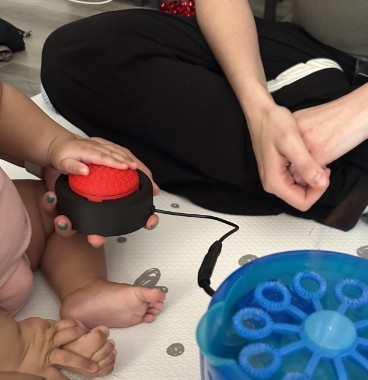
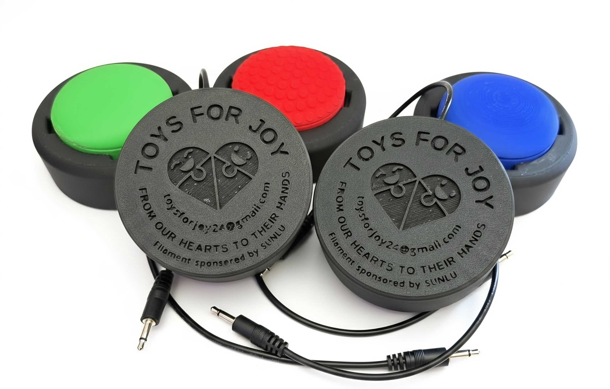
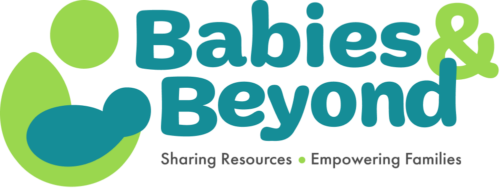
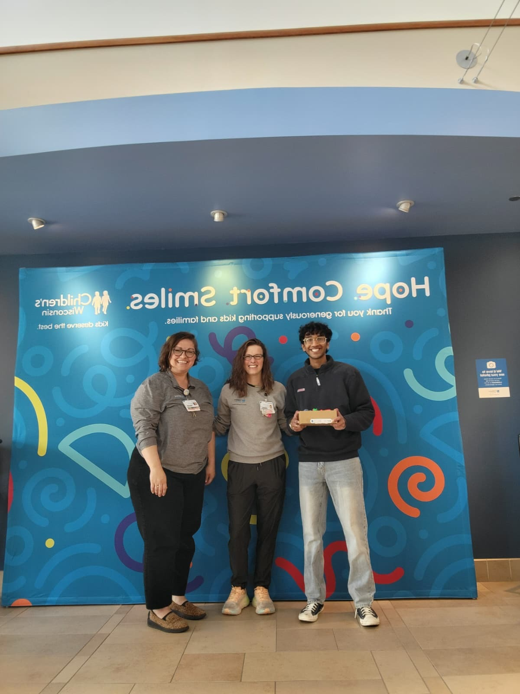
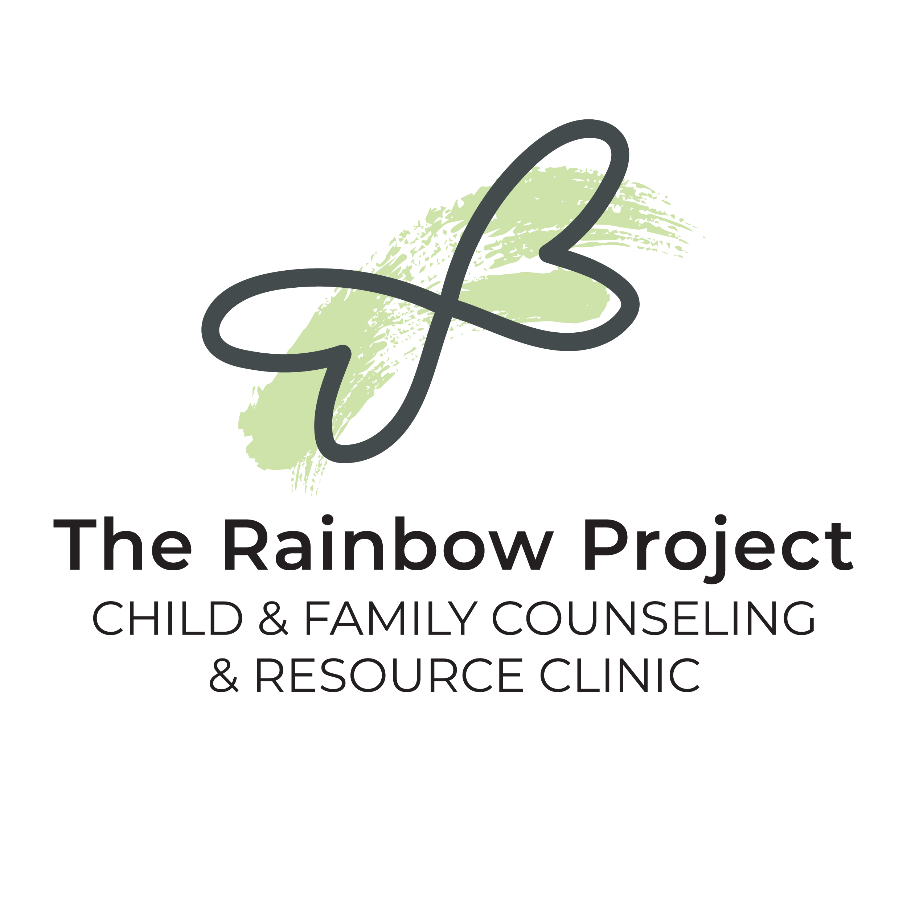
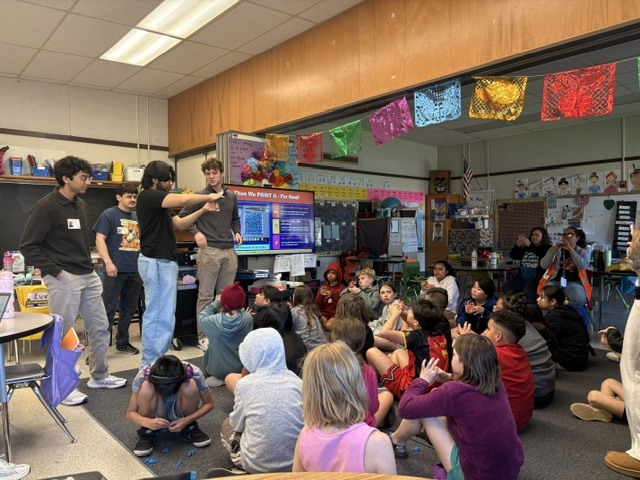
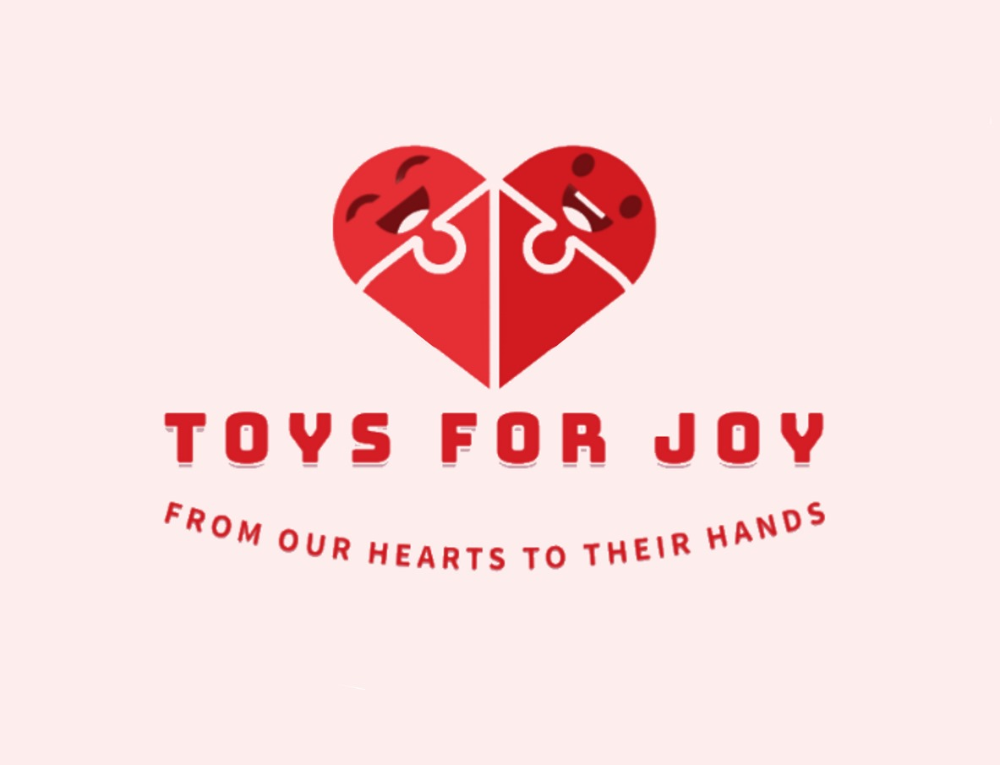

Attreya Joined the Team
Attreya Attili joined Toys for Joy, contributing his CAD and design experience to help lead the organization's part-design efforts.
Follow the donations, partnerships, events, and people that have shaped Toys for Joy.
Plans and upcoming moments appear here until their date arrives.
Nothing is on the public calendar just yet. Check back soon for what comes next.
Attreya Attili joined Toys for Joy, contributing his CAD and design experience to help lead the organization's part-design efforts.

We donated five adaptive switch buttons to Penfield therapy center to support accessible play, learning, and therapy.

We delivered ten adaptive switch buttons to Penfield therapy center, expanding access to hands-on activities for the children they serve.

We donated 175 toys to Babies & Beyond, helping the organization provide additional comfort and joy to local children and families.

We donated 250 toys to Children's Wisconsin to bring moments of comfort and happiness to children receiving care.
SUNLU became a Toys for Joy sponsor, providing filament and equipment support that helps us produce more high-quality 3D-printed toys.
We added a Bambu Lab P1S to our production setup, increasing our capacity to create 3D-printed toys and adaptive equipment.
We delivered 250 toys to UW Health, extending our mission to more children and families navigating medical care.

We donated 40 toys to the Rainbow Project therapy center to support children and families participating in its programs.
We donated 85 toys to the Rainbow Project therapy center, helping create moments of comfort, play, and connection.
Yasmeen Patrick and Srivally Gudimella joined Toys for Joy, bringing new energy and perspectives to the organization's work.
Our partnership with UW Hospital opened another path for bringing comfort and joy to children facing medical challenges.

At our inaugural community event, the team set up games, led activities, helped with cleanup, and donated 100 toys at the House of Love Youth Home's annual block party.

We delivered 73 3D-printed fidget toys to Walker's Point Youth & Family Services for use as both joyful gifts and therapeutic tools.
Toys for Joy became a recognized tax-exempt nonprofit, helping every contribution reach further and support more children.

We spoke with students about 3D printing and engineering, then donated 188 toys to the school community.

Toys for Joy began with a simple idea: combine creativity, compassion, and community action to bring comfort and happiness to children who need it most.